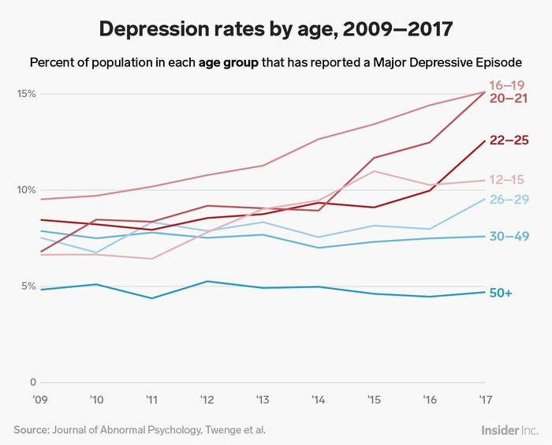
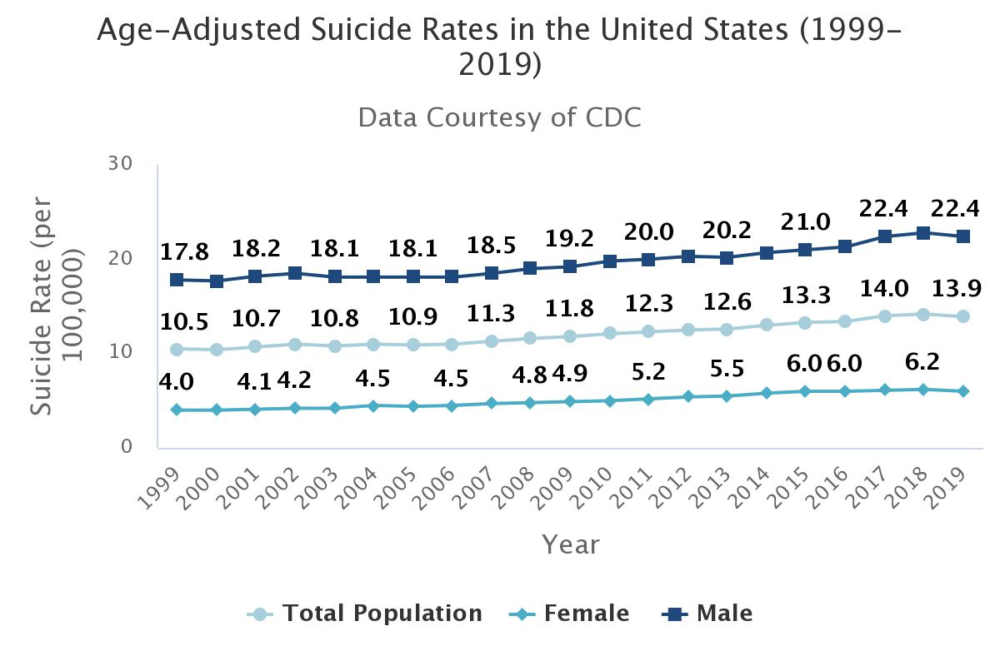

class: center, middle ### Lesson 5 Q&A #### Data on modern hopelessness; dangers in thinking we'd be different if we were rich --- #### Outline - [Actual data for apathy and depression and suicide: is it as bad as we said?](#3) - [Apathy and emptiness](#4) - [Depression](#7) - [Suicide](#9) - [So yes, despite all our progress, the futility shines through all the more in our modern day](#11) - [I certainly wouldn't be dissatisfied if I were rich!](#12) --- #### Actual data for apathy and depression and suicide: is it as bad as we said? During the lesson, I mentioned the fact that symptoms of human hopelessness are rapidly increasing despite all the positive noises made about how much humanity has progressed in recent decades. While it doesn't take too much internet research to verify such claims, it is important not to be hand-wavy. So we will briefly go through some external sources on these things. I encourage anybody with more than a passing interest to do their own research to not only verify in more depth the things we will talk about, but also to explore even further. It is important to note that statistics vary by culture. For example, while global suicide rates have been on the decline (declining rates in China and India contributing here), they have been steadily increasing in the United States. --- #### Apathy and emptiness A good starting place: https://neurosciencenews.com/emptiness-mental-health-18854/ A good quote: > ...[H]undreds of participants described the same feeling. We found that emptiness was characterised by a sense of inner void, coupled with lack of purpose in life and a sense of disconnection to the people in their lives and the world around them. This left people feeling that they were “going through the motions”, and not able to contribute to the world and their lives as they would like." --- #### Apathy and emptiness Another good quote: > "Our findings lead us to believe emptiness is far more widespread than previously recognised. Feelings of emptiness can be experienced by anyone, regardless of their mental health history – and for some it can be chronic and life threatening. This experience is clearly complex, impacting every aspect of a person’s life and relationships. > > Until now, emptiness has received little attention from mental health researchers. But our research has now given a new definition to this feeling, and has highlighted the seriousness of this experience for the people who are effected [*sic*]. Our research also suggests that it might be time to change the way we think about mental health, distress and the support offered – as many people struggle with emptiness, regardless of whether they’ve been diagnosed with a mental health condition or not." --- #### Apathy and emptiness The *Diagnostic and Statistical Manual of Mental Disorders* (DSM; most current at time of writing = DSM-5, publ. 2013), doesn't really single out apathy and emptiness as a condition of its own (cf. the comments we just quoted), but it is a contributing factor in depression and borderline personality disorder. The research that our source went over argued that while it has not received the attention that other things have, it is widespread and serious... just as we'd expect given a world of free time and leisure wherein people suddenly have the time and opportunity to reflect upon the pointlessness and futility of life. --- #### Depression A good starting place: https://www.businessinsider.com/depression-rates-by-age-young-people-2019-3 A good quote: > "Over the past decade, more and more people in nearly every age group, financial bracket, and circumstance across the country have reported worrying symptoms. They're losing interest in life, lacking zest for learning new things, and finding that activities they previously enjoyed feel meaningless... > > But nowhere is this troubling trend more notable than among young people as shown in a study published last week in the Journal of Abnormal Psychology." While, mental health conditions naturally vary across age groups, nowhere are the problematic trends more worrisome than in young people. --- #### Depression From this same article:  --- #### Suicide A good starting place: https://www.nimh.nih.gov/health/statistics/suicide A good quote: > "Suicide is a major public health concern. Suicide is among the leading causes of death in the United States. Based on recent mortality data, suicide in some populations is on the rise." Another good quote: > "The total age-adjusted suicide rate in the United States increased 35.2% from 10.5 per 100,000 in 1999 to 14.2 per 100,000 in 2018, before declining to 13.9 per 100,000 in 2019." --- #### Suicide From this same info page:  --- #### So yes, despite all our progress, the futility shines through all the more in our modern day Scholars can and do argue over the causes for the trends we have just examined. The data is objective, but what explains it is much more difficult to pin down. We have argued that in fact these trends make perfect sense in the context of our study. Without God, life really is pointless, so to the extent people have become less preoccupied just surviving (such that they have more time to think), to that extent the void will stare them more directly in the face, which has consequences such as we've gone over. With this being said, as we shall see, many people successfully distract themselves from these realities instead. --- #### I certainly wouldn't be dissatisfied if I were rich! When talking about the insatiability of human desire, many people are skeptical that they themselves would ever desire more if only they were to achieve the level of wealth that some others enjoy. Most such people believe a few things: - That media reports about the dissatisfaction of the rich and powerful are either false (the rich and powerful secretly enjoy pleasurable and fulfilling lives -- the media gets it wrong), or that it is because of the weak moral character of these people that they experience a lust for more and dissatisfaction with their already grand estate. These people are viewed as necessarily being the authors of their own problems and dissatisfaction, in other words. - That if they themselves were to be in the same circumstances, they would certainly be happy and content, and not chase after more in futility, like those present fools. "It's because those rich people lack moral backbone -- I would be different and better!" And thus it is that many people categorically reject the teaching that human desire is insatiable. It's only insatiable for people that are not them. --- #### I certainly wouldn't be dissatisfied if I were rich! Perhaps some of these people are correct. Maybe they really would handle wealth well, and live satisfying and fulfilling lives. Some things militate against taking them at their word, however: - Observation of actual living breathing humans who gain wealth and power. Ever head the saying of Lord Acton: “Power corrupts, and absolute power corrupts absolutely”? Gaining lots of money and power yields temptations far beyond what most people face in their lives of more humble means. And history and common experience tell us that most people fall to the temptations rather than effectively resisting. No matter what their intentions were from the outset. - Scientific research concerning the fact that human perception (and memory) is incredibly self-serving. People tend to think much too highly of themselves. (All of us, not just "those people"). So it is that murderers and terrorists believe themselves righteous. And so it is that most people rate their own moral choices as far superior to others, when in fact they are just as bad, if not worse. - Talk is cheap, and words are wind. It's easy to say you would be righteous and great from the armchair, if only God would bless you with wealth. Ever wonder why He hasn't? In fact, most of us would not successfully navigate the immense pressures that come with such things as great money and power. And because there are no hypotheticals, we can only do the best with what is actually before us, which is what *is* actually best for us, because God knows way better than we do, and He doesn't make mistakes. --- #### I certainly wouldn't be dissatisfied if I were rich! As a closing fact, consider that such a statement as is up in the title here is, in truth, little different than the following: > "If I were in Peter's shoes, I wouldn't have denied Christ!" Or > "If I were Elijah, I wouldn't have acted cowardly and run from Jezebel!" Or > "If I were Moses, I wouldn't have struck the rock!" In a general sense, until we admit our own insufficiency and humble ourselves, we will never be able to fully act as God wants us to. Here specifically, as long as we are in this world, we will struggle with the lusts of the flesh, including covetousness. We are not especially immune from the dangers of insatiable human desire. We are not special. And believing otherwise is just setting us up for a fall. --- #### Outline - [Actual data for apathy and depression and suicide: is it as bad as we said?](#3) - [Apathy and emptiness](#4) - [Depression](#7) - [Suicide](#9) - [So yes, despite all our progress, the futility shines through all the more in our modern day](#11) - [I certainly wouldn't be dissatisfied if I were rich!](#12)